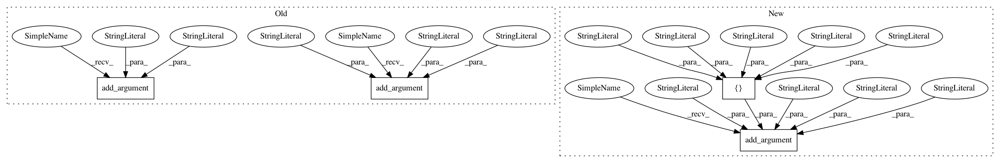

58b116304740207ad725dab68628def89f02f603,sos/__main__.py,,get_run_parser,#Any#Any#,160
Before Change
runmode.add_argument("-n", action="store_true", dest="__dryrun__",
help="""Execute a workflow without executing any actions. This can be
used to check the syntax of a SoS file.""")
runmode.add_argument("-f", action="store_true", dest="__rerun__",
help="""Execute the workflow in a special run mode that ignores saved
runtime signatures and re-execute all the steps.""")
runmode.add_argument("-F", action="store_true", dest="__construct__",
help="""Execute the workflow in a special run mode that re-use existing
output files and recontruct runtime signatures if output files
exist.""")
output = parser.add_argument_group(title="Output options",
description="""Output of workflow""")
output.add_argument("-d", nargs="?", default="", metavar="DAG", dest="__dag__",
help="""Output Direct Acyclic Graph (DAGs) in graphiviz .dot format. An
After Change
runmode.add_argument("-n", action="store_true", dest="__dryrun__",
help="""Execute a workflow without executing any actions. This can be
used to check the syntax of a SoS file.""")
runmode.add_argument("-s", choices=["default", "ignore", "force", "build", "assert"],
default="ignore" if interactive else "default", metavar="SIGMODE",
dest="__sigmode__",
help="""How runtime signature would be handled, which can be "default"
(save and use signature, default mode in batch mode), "ignore"
(ignore runtime signature, default mode in interactive mode),
"force" (ignore existing signature and overwrite them while
executing the workflow), "build" (build new or overwrite
existing signature from existing environment and output files), and
"assert" for validating existing files against their signatures.
Please refer to online documentation for details about the
use of runtime signatures.""")
output = parser.add_argument_group(title="Output options",
description="""Output of workflow""")
output.add_argument("-d", nargs="?", default="", metavar="DAG", dest="__dag__",
help="""Output Direct Acyclic Graph (DAGs) in graphiviz .dot format. An
In pattern: SUPERPATTERN
Frequency: 3
Non-data size: 4
Instances
Project Name: vatlab/SoS
Commit Name: 58b116304740207ad725dab68628def89f02f603
Time: 2016-12-10
Author: ben.bog@gmail.com
File Name: sos/__main__.py
Class Name:
Method Name: get_run_parser
Project Name: vatlab/SoS
Commit Name: 58b116304740207ad725dab68628def89f02f603
Time: 2016-12-10
Author: ben.bog@gmail.com
File Name: sos/__main__.py
Class Name:
Method Name: get_run_parser
Project Name: NVIDIA/sentiment-discovery
Commit Name: 345fcc9ff27a62015f257186af2941984d6a3cd7
Time: 2018-12-05
Author: raulp@nvidia.com
File Name: arguments.py
Class Name:
Method Name: add_finetune_classifier_args
Project Name: MolSSI/QCEngine
Commit Name: 6ce2c5ca72f4ee0e937aa54cc58d1b4752a97452
Time: 2019-08-15
Author: mattgwelborn@gmail.com
File Name: qcengine/cli.py
Class Name:
Method Name: parse_args